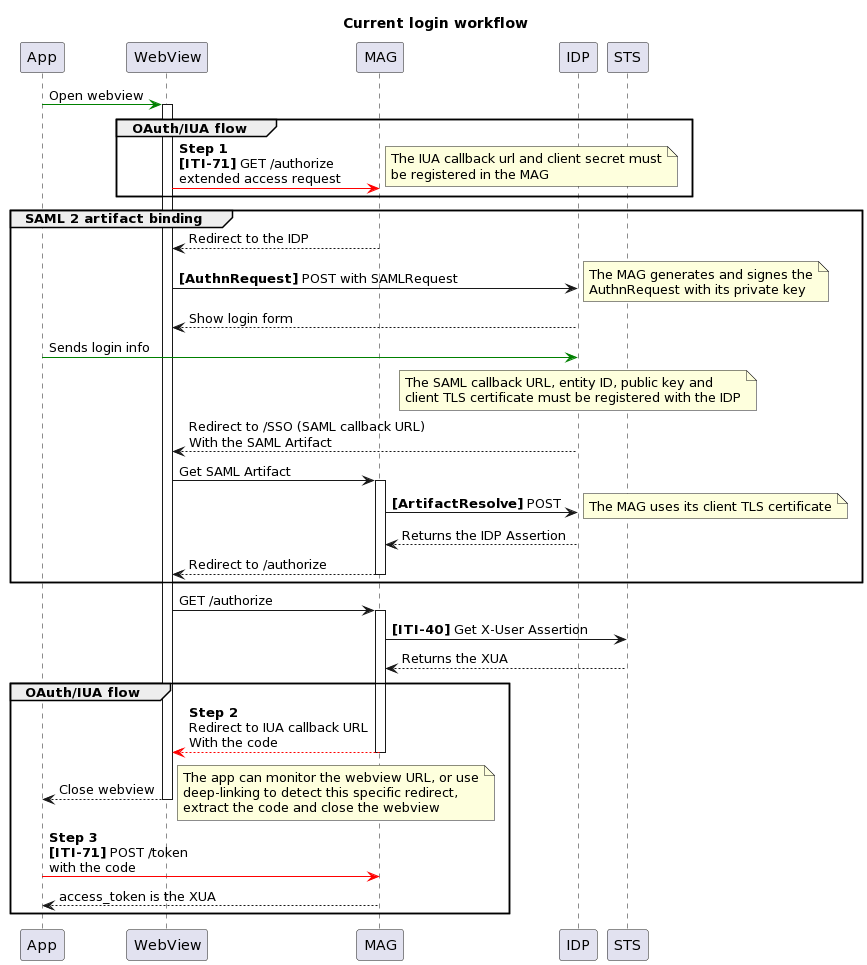

EPR Primary System Integration
The REST variants of XDS transactions presented here are based on CH EPR mHealth, itself based on various IHE profiles.
Don't forget to properly encode the HTTP parameters in the queries (especially colons and pipes).
In the following examples, they are shown decoded for a better readability.
Authorization and Accept headers are not shown in the examples.
For HTTP GET requests, there is usually an equivalent HTTP POST request that should be supported.
Authentication

The sequence diagram shows the currently implemented authentication flow.
You should integrate one of the supported IDPs in your application. The OAuth/IUA flow is supported for clients, the SAML flow is the only one implemented between the MobileAccessGateway and the IDP.
Once you get the IDP SAML assertion, you can trade it for the community SAML assertion, which binds your IDP
identification to a specific patient and a purpose of use.
It is an HTTP POST request to /assertion, with the header Scope and the IDP SAML assertion as body.
The header Scope contains the following values:
purpose_of_use(token, required): a value from EprPurposeOfUse.subject_role(token, required): eitherHCP,ASS,PATorREPin the systemurn:oid:2.16.756.5.30.1.127.3.10.6.person_id(string, required): the patient EPR-SPID in the CX format.principal(string, only if role is ASS): the name of the healthcare professional an assistant is acting on behalf of.principal_id(token, only if role is ASS): the GLN of the healthcare professional an assistant is acting on behalf of.group(string, only if role is ASS): the name of the organization or group an assistant is acting on behalf of.group_id(token, only if role is ASS): the OID of the organization or group an assistant is acting on behalf of.
POST /assertion HTTP/1.1
Scope: person_id=761337610445502987^^^&2.16.756.5.30.1.127.3.10.3&ISO purpose_of_use=urn:oid:2.16.756.5.30.1.127.3.10.5|NORM subject_role=urn:oid:2.16.756.5.30.1.127.3.10.6|HCP
Content-Type: application/xml
<saml2:Assertion xmlns:saml2="urn:oasis:names:tc:SAML:2.0:assertion" Version="2.0">
<!-- Content of the IDP assertion… -->
</saml2:Assertion>
The response then looks like:
HTTP/1.1 200 OK
Content-Type: application/json
{
"access_token": "U0FNTGFzc2VydGlvbg",
"token_type": "IHE-SAML",
"expires_in": 60000,
"scope": "resourceId/761337610445502987 purposeOfUse/NORM role/HCP"
}
The base64-url encoded SAML assertion is given in
access_token, and that value has to be prefixed with Bearer and inserted in an Authorization HTTP header for
all transactions that requires it.
GET /... HTTP/1.1
Authorization: Bearer U0FNTGFzc2VydGlvbg
Patient directory
The patient directory (called MPI) contains identifiers and demographics for all registered patients. Identifiers include the MPI-PID and EPR-SPID, and identifiers used by primary systems that choose to share them. Demographics include the given and family names, date of birth, gender, nationality and telecoms. It can be queried and updated.
Retrieving patient identifiers
Patient identifiers (commonly the MPI-PID and EPR-SPID) can be queried with an ITI-83 (Mobile Patient Identifier Cross-reference Query) transaction.
The transaction is an HTTP GET request to the endpoint /Patient/$ihe-pix, with the following parameters:
- sourceIdentifier (token, mandatory): the known patient identifier
- targetSystem (uri, optional): to restrict the results to the MPI-PID and/or EPR-SPID.
Examples
GET /Patient/$ihe-pix?sourceIdentifier=urn:oid:2.999.42|1234 HTTP/1.1
GET /Patient/$ihe-pix?sourceIdentifier=urn:oid:2.16.756.5.30.1.191.1.0.12.3.101|{mpi-pid}&targetSystem=urn:oid:2.16.756.5.30.1.127.3.10.3 HTTP/1.1
Retrieving patient demographics
Patient demographics can be queried with an ITI-78 (Mobile Patient Demographics Query) transaction.
The transaction can be done in two ways, either by specifying the MPI-PID to retrieve a single patient, or by specifying other information.
If the MPI-PID is known, the transaction is an HTTP GET request to the endpoint /Patient/{id}, where {id} is
the system OID and the identifier value, separated by a dash.
GET /Patient/2.16.756.5.30.1.191.1.0.2.1-e7963774-9098-445f-9cab-5d52234b52c3 HTTP/1.1
GET /Patient/2.16.756.5.30.1.127.3.10.3-761337615866818761 HTTP/1.1
Otherwise, parameters can be used to search patients with other information:
familyandgiven(string)identifier(token)telecom(token)birthdate(date)address(string): to search in any part of the address.address-city,address-country,address-postalcode,address-state(string)gender(token)
GET /Patient?family=MOHR&given=ALICE&gender=female HTTP/1.1
Feeding patient information
Feeding patient information can be done with the ITI-104 (Patient Identity Feed FHIR) transaction.
The following profile shall be used: http://fhir.ch/ig/ch-epr-mhealth/StructureDefinition-ch-pixm-patient.html.
The MPI-PID is required in identifier.
You don't have to re-specify the other identifiers, they won't be deleted if they're missing from the request.
If you want to add an identifier, you can put it in identifier.
Examples
PUT /Patient?identifier=urn:oid:2.16.756.5.30.1.196.3.2.1|MAGMED001 HTTP/1.1
Content-Type: application/fhir+json
{
"active": true,
"birthDate": "1987-10-08",
"gender": "male",
"id": "2.16.756.5.30.1.127.3.10.3-761337611735842172",
"identifier": [
{
"system": "urn:oid:2.16.756.5.30.1.196.3.2.1",
"value": "MAGMED001"
},
{
"system": "urn:oid:2.999.42",
"value": "new-identifier-value"
}
],
"name": [
{
"family": "NEFF-WINGEIER",
"given": [
"Trong Sang"
]
}
],
"resourceType": "Patient"
}
Document directory
The document directory stores documents (in the document repository) and their metadata (in the document registry).
Searching
You can search the document registry with the ITI-67 (Find Document References) transaction.
The transaction is an HTTP GET request to the endpoint /DocumentReference, the search parameters are described in
the MHD ITI-67 specifications.
Examples
GET /DocumentReference?patient.identifier=urn:oid:2.999|11111111&status=current HTTP/1.1
GET /DocumentReference?patient.identifier=urn:oid:2.999|11111111&category=http://snomed.info/sct|371531000&type=http://snomed.info/sct|419891008 HTTP/1.1
GET /DocumentReference?patient.identifier=urn:oid:2.999|11111111&creation=ge2023-07-10&creation=le2023-07-17 HTTP/1.1
You can also search for SubmissionSets with the ITI-66 (Find Document Lists) transaction.
Examples
GET /List?patient.identifier=urn:oid:2.999|11111111 HTTP/1.1
GET /List?patient.identifier=urn:oid:2.999|11111111&code=submissionset&status=current&designationType=http://loinc.org|1234-5 HTTP/1.1
Reading
Retrieving a document is done with the ITI-68 (Retrieve Document) transaction.
It is a simple HTTP GET request to a URL that you will find in the linked DocumentReference (that you can obtain
with search results): DocumentReference.content.attachment.url.
Publishing
You can publish a document with the ITI-65 (Provide Document Bundle) transaction.
The transaction is an HTTP POST request to the endpoint /. The following profile shall be used:
https://profiles.ihe.net/ITI/MHD/StructureDefinition/IHE.MHD.Comprehensive.ProvideBundle.
Examples
POST / HTTP/1.1
Content-Type: application/fhir+json;charset=UTF-8
{
"entry": [
{
"fullUrl": "urn:uuid:59f3a738-11c1-4a0e-a89b-c4552d0fe9a7",
"request": {
"method": "POST",
"url": "Binary"
},
"resource": {
"contentType": "application/pdf",
"data": "VGhlIHBkZiBmaWxlIGdvZXMgaGVyZQ==",
"resourceType": "Binary"
}
},
{
"fullUrl": "urn:uid:eb00c215-61cf-43a3-b99a-020ab21828fa",
"request": {
"method": "POST",
"url": "List"
},
"resource": {
"code": {
"coding": [
{
"code": "submissionset",
"display": "SubmissionSet as a FHIR List",
"system": "http://profiles.ihe.net/ITI/MHD/CodeSystem/MHDlistTypes"
}
]
},
"date": "2023-01-06T14:23:14+01:00",
"entry": [
{
"item": {
"reference": "urn:uuid:5ae558f6-c103-4566-9a7e-63242abd24ab"
}
}
],
"extension": [
{
"url": "http://profiles.ihe.net/ITI/MHD/StructureDefinition/ihe-sourceId",
"valueIdentifier": {
"value": "urn:oid:2.16.756.5.30.1.145.20.1"
}
},
{
"url": "http://fhir.ch/ig/ch-epr-mhealth/StructureDefinition/ch-ext-author-authorrole",
"valueCoding": {
"code": "HCP",
"display": "Healthcare professional",
"system": "urn:oid:2.16.756.5.30.1.127.3.10.6"
}
},
{
"url": "http://profiles.ihe.net/ITI/MHD/StructureDefinition/ihe-designationType",
"valueCodeableConcept": {
"coding": [
{
"code": "71388002",
"display": "Procedure (procedure)",
"system": "http://snomed.info/sct"
}
],
"text": "Procedure (procedure)"
}
}
],
"identifier": [
{
"system": "urn:ietf:rfc:3986",
"use": "official",
"value": "urn:uuid:ab1862da-e31e-4ca9-ab01-24883cda5404"
},
{
"system": "urn:ietf:rfc:3986",
"use": "usual",
"value": "urn:oid:2.999.123"
}
],
"mode": "working",
"resourceType": "List",
"status": "current",
"subject": {
"reference": "Patient/2.16.756.5.30.1.191.1.0.2.1-c55f4ca7-bd4e-4134-8dcd-56b793ade958"
}
}
},
{
"fullUrl": "urn:uuid:5ae558f6-c103-4566-9a7e-63242abd24ab",
"request": {
"method": "POST",
"url": "DocumentReference"
},
"resource": {
"author": [
{
"reference": "#practrole"
}
],
"category": [
{
"coding": [
{
"code": "405624007",
"display": "Administrative documentation (record artifact)",
"system": "http://snomed.info/sct"
}
]
}
],
"contained": [
{
"birthDate": "1993-01-27",
"gender": "male",
"id": "1",
"identifier": [
{
"system": "urn:oid:2.16.756.5.30.1.191.1.0.12.3.101",
"value": "MAGMED006"
},
{
"system": "urn:oid:2.16.756.5.30.1.191.1.0.2.1",
"value": "c55f4ca7-bd4e-4134-8dcd-56b793ade958"
}
],
"name": [
{
"family": "Sesztáková",
"given": [
"Jett Flynn"
]
},
{
"family": "Sesztáková",
"given": [
"Jett Flynn"
]
}
],
"resourceType": "Patient"
},
{
"address": [
{
"city": "Zürich",
"country": "CH",
"line": [
"Krankenstrasse 2"
],
"postalCode": "8005"
}
],
"id": "org",
"identifier": [
{
"system": "urn:oid:2.51.1.3",
"value": "7601000234438"
}
],
"name": "Hausarzt",
"resourceType": "Organization"
},
{
"id": "pract",
"identifier": [
{
"system": "urn:oid:2.51.1.3",
"value": "7601000234438"
}
],
"name": [
{
"family": "Hausarzt",
"given": [
"Familien"
]
}
],
"resourceType": "Practitioner"
},
{
"id": "practrole",
"organization": {
"reference": "#org"
},
"practitioner": {
"reference": "#pract"
},
"resourceType": "PractitionerRole"
}
],
"content": [
{
"attachment": {
"contentType": "application/pdf",
"creation": "2011-11-29T11:00:00+01:00",
"language": "de-CH",
"url": "urn:uuid:59f3a738-11c1-4a0e-a89b-c4552d0fe9a7",
"title": "Document example title"
},
"format": {
"code": "urn:che:epr:EPR_Unstructured_Document",
"system": "urn:oid:2.16.756.5.30.1.127.3.10.10"
}
}
],
"context": {
"facilityType": {
"coding": [
{
"code": "264358009",
"display": "General practice premises(environment)",
"system": "http://snomed.info/sct"
}
]
},
"practiceSetting": {
"coding": [
{
"code": "394802001",
"display": "General medicine(qualifier value)",
"system": "http://snomed.info/sct"
}
]
},
"sourcePatientInfo": {
"reference": "#1"
}
},
"date": "2011-11-29T11:00:00+01:00",
"description": "file.pdf",
"extension": [
{
"url": "http://fhir.ch/ig/ch-epr-mhealth/StructureDefinition/ch-ext-author-authorrole",
"valueCoding": {
"code": "HCP",
"display": "Healthcare professional",
"system": "urn:oid:2.16.756.5.30.1.127.3.10.6"
}
}
],
"identifier": [
{
"system": "urn:ietf:rfc:3986",
"use": "usual",
"value": "urn:oid:2.25.161286146254585515369612173924762763705"
}
],
"masterIdentifier": {
"value": "urn:uuid:f3b905a6-f0e4-4ba6-9b6e-c7e7692c0438"
},
"resourceType": "DocumentReference",
"securityLabel": [
{
"coding": [
{
"code": "17621005",
"display": "Normally accessible",
"system": "http://snomed.info/sct"
}
]
}
],
"status": "current",
"subject": {
"reference": "Patient/2.16.756.5.30.1.191.1.0.2.1-c55f4ca7-bd4e-4134-8dcd-56b793ade958"
},
"type": {
"coding": [
{
"code": "772786005",
"display": "Medical certificate (record artifact)",
"system": "http://snomed.info/sct"
}
]
}
}
}
],
"meta": {
"profile": [
"http://profiles.ihe.net/ITI/MHD/StructureDefinition/IHE.MHD.Comprehensive.ProvideBundle"
]
},
"resourceType": "Bundle",
"type": "transaction"
}
Professional and organization directory
The HPD (Healthcare Provider Directory) contains information about the healthcare professionals and organizations that are part of the EPR. Relationships between them (i.e. membership of professionals to organizations, or relationships between organizations) are also available.
Searching
Professionals, organizations and relationships can be queried with an ITI-90 (Find Matching Care Services) transaction. See the specifications for the complete list of search parameters.
For professionals, the endpoint is /Practitioner.
GET /Practitioner?family=Müller HTTP/1.1
GET /Practitioner?identifier=urn:oid:2.51.1.3|7601000102737 HTTP/1.1
GET /Practitioner/DrPeterPan HTTP/1.1
For organizations, the endpoint is /Organization.
GET /Organization?active=true&name:contains=Medical HTTP/1.1
GET /Organization/SpitalXDept3 HTTP/1.1
For relationships (memberships), the endpoint is /PractitionerRole.
GET /PractitionerRole?organization=Organization/HUG&_include=PractitionerRole:practitioner HTTP/1.1
GET /PractitionerRole/PeterPanPraxisP HTTP/1.1
Updating
The HPD update is not supported in a REST transaction. Please use the ITI-59 (Provider Information Feed) transaction.
Audit messages
Creating
For all transactions, it is required to send the same audit messages. You can use the regular ITI-20 transaction, or use the restful one.
See the mapping from DICOM to FHIR.
Examples
POST /ARR/fhir/AuditEvent HTTP/1.1
Content-Type: application/fhir+xml
<Bundle>
<entry>
...
<request>
<method value="POST"/>
</request>
</entry>
</Bundle>
Reading
You can read the audit messages for a given patient with an ITI-81 transaction.
Warning
The endpoint for this transaction is the EPR community itself, not the Mobile Access Gateway. This transaction is still implemented on a previous CH:ATC specification (March 2020), based on the IHE Restful ATNA supplement rev. 2.2. A lot have changed since.
The transaction is an HTTP GET request on the endpoint, with the parameter entity-id that contain the patient EPR-SPID,
and date to constraint the audit message date.
The Authorization header uses the prefix IHE-SAML and the SAML assertion is encoded with the regular base64
alphabet.
The community will ask other communities for their audit messages and regroup them all. If a foreign community is not reachable, an OperationOutcome may be added to the response Bundle.
Examples
GET /ARR/fhir/AuditEvent?entity-id=urn:oid:2.16.756.5.30.1.127.3.10.3|{epr-spid}&date=ge2023-07-10&date=le2023-07-17 HTTP/1.1
Authorization: IHE-SAML Zm9vYmE=